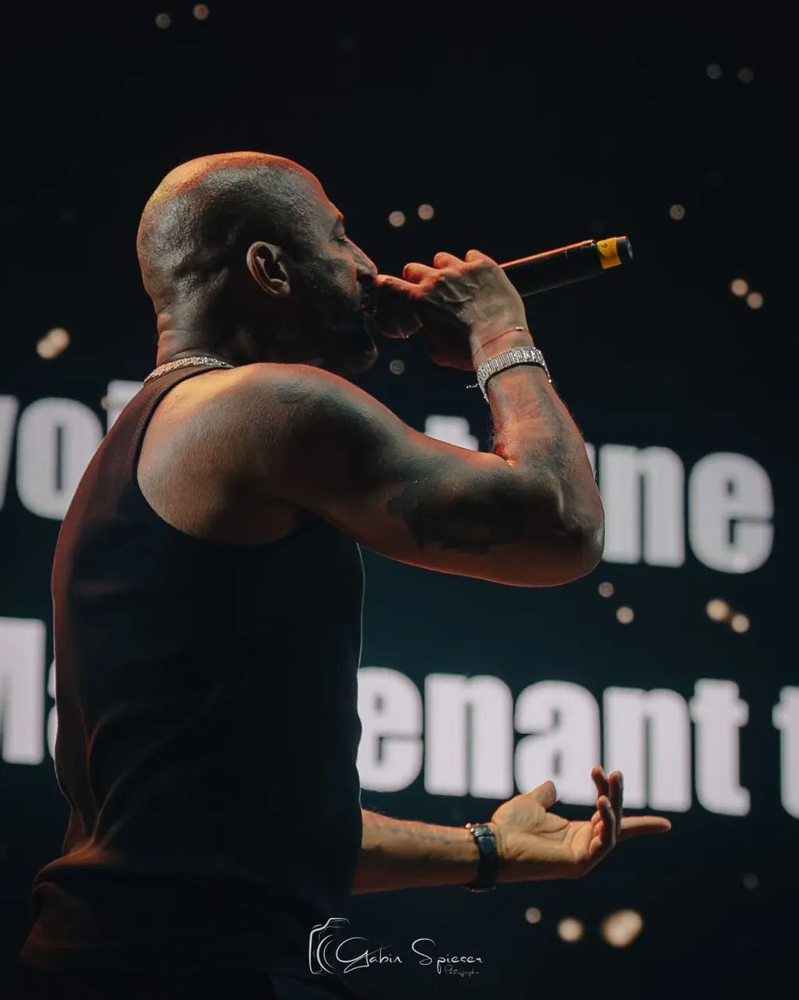

Du noir, de la fumée, une lumière orange comme une braise qui refuse de s’éteindre. Stomy Bugsy commence seul, partage la scène, puis la reprend pour lui. À la fin, le doigt pointé vers le ciel. Rien à ajouter.
Seul


À deux


Derrière lui, un autre rappeur lève la main. La même lumière orange les soude l’un à l’autre.
Dans le noir

Dans son dos, des lettres blanches sur l’écran. Le décor parle fort ; lui, encore plus.
Vers le ciel

10 photographies de Stomy Bugsy sur scène par Gabin Spieser : la fumée, la lumière orangée, le passage du solo au duo et le doigt pointé vers le ciel.
Crédits
- Artiste
- Stomy Bugsy
- Série
- Seul, puis à deux
- Photographies
- Gabin Spieser · 10 images
Publier une image ? Précisez la photographie et le support envisagés. Les droits d’utilisation et le crédit du photographe se définissent ensemble avant publication. Parlons de votre projet.